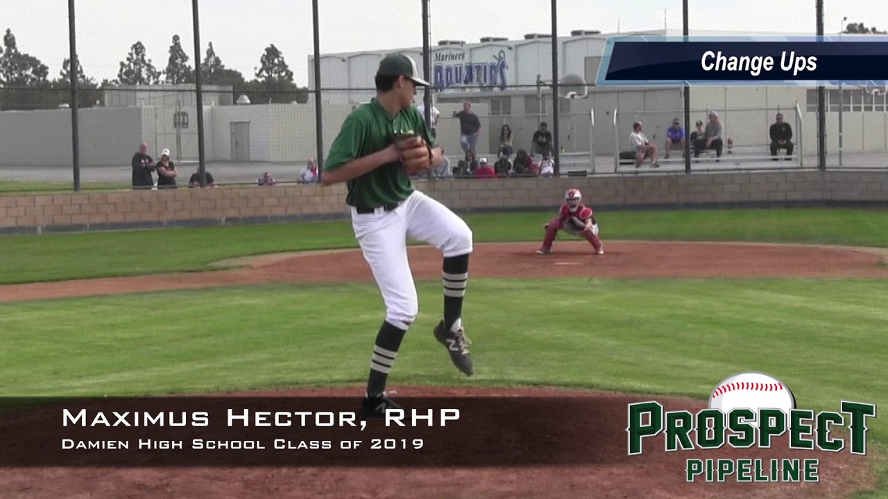

Athletics
I play baseball for Damien High School and for a club team. I love baseball, i sont think i will ever stop playing. I used to play soccer and basketball in my early childhood, but i quit those two when I entered 6th grade.
Academics
I attend Damien High School in La Verne, California. I live in the city of Rancho Cucamonga. I am now a senior at Damien and enjoy the history and mathematics departments Damien has to offer.

Music
I love listening to music. Music is one of my favorite things as it relieves stress, brings people togehter, and people can dance to it. I enjoy EDM, trap and hip hop music.